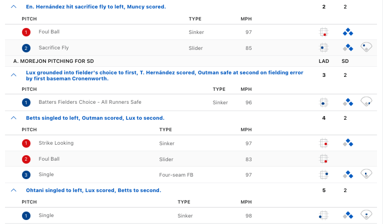

devtools::install_github(repo = "BillPetti/baseballr")Lecture 4: Wins above Replacement I
Overview: Allocation of credit in baseball
Conditioning on Results
Key Topics
Expected runs framework
Obtaining pitch-by-pitch data
PitchF/X and StatCast
Accessing data from StatCast
Major League Baseball hosts a public-facing web interface for accessing StatCast data. Using that interface, users can pull up data for individual players or about all pitches of a certain type. Powering this website is an application programming interface (API), which allows software applications to connect to the underlying StatCast database. It is through this API that the baseballR package acquires data. If you have not yet installed that package, you can do so using the following code
The baseballR package provides a function baseballr::statcast_search() that allows users query all StatCast data by date, player, or player type. One of the original StatCast authors, Bill Petti, wrote a wrapper function that uses baseballr::statcast_search() to pull down an entire season’s worth of pitch-by-pitch data; see this blog post for more the wrapper function code and this earlier post for details about its design. Since he published his original function, StatCast has added some new fields, necessitating a few changes. The code below defines a new scraper, which we will use in the course. An R script containing this code is available at this link. At a high level, the scraping function pulls data from StatCast on a week-by-week basis.
Show the code
annual_statcast_query <- function(season) {
data_base_column_types <-
read_csv("https://app.box.com/shared/static/q326nuker938n2nduy81au67s2pf9a3j.csv")
dates <-
seq.Date(as.Date(paste0(season, '-03-01')),
as.Date(paste0(season, '-12-01')),
by = '4 days')
date_grid <-
tibble::tibble(start_date = dates,
end_date = dates + 3)
safe_savant <-
purrr::safely(scrape_statcast_savant)
payload <-
purrr::map(.x = seq_along(date_grid$start_date),
~{message(paste0('\nScraping week of ', date_grid$start_date[.x], '...\n'))
payload <-
safe_savant(start_date = date_grid$start_date[.x],
end_date = date_grid$end_date[.x],
type = 'pitcher')
return(payload)
})
payload_df <- purrr::map(payload, 'result')
number_rows <-
purrr::map_df(.x = seq_along(payload_df),
~{number_rows <-
tibble::tibble(week = .x,
number_rows = length(payload_df[[.x]]$game_date))
}) %>%
dplyr::filter(number_rows > 0) %>%
dplyr::pull(week)
payload_df_reduced <- payload_df[number_rows]
payload_df_reduced_formatted <-
purrr::map(.x = seq_along(payload_df_reduced),
~{cols_to_transform <-
c("pitcher", "fielder_2", "fielder_3",
"fielder_4", "fielder_5", "fielder_6", "fielder_7",
"fielder_8", "fielder_9")
df <-
purrr::pluck(payload_df_reduced, .x) %>%
dplyr::mutate_at(.vars = cols_to_transform, as.numeric) %>%
dplyr::mutate_at(.vars = cols_to_transform, function(x) {ifelse(is.na(x), 999999999, x)})
character_columns <-
data_base_column_types %>%
dplyr::filter(class == "character") %>%
dplyr::pull(variable)
numeric_columns <-
data_base_column_types %>%
dplyr::filter(class == "numeric") %>%
dplyr::pull(variable)
integer_columns <-
data_base_column_types %>%
dplyr::filter(class == "integer") %>%
dplyr::pull(variable)
df <-
df %>%
dplyr::mutate_if(names(df) %in% character_columns, as.character) %>%
dplyr::mutate_if(names(df) %in% numeric_columns, as.numeric) %>%
dplyr::mutate_if(names(df) %in% integer_columns, as.integer)
return(df)
})
combined <- payload_df_reduced_formatted %>%
dplyr::bind_rows()
return(combined)
}To use this function, it is enough to run something like.
statcast2024 <- annual_statcast_query(2024)
Long run time
Scraping a single season of StatCast data can take on the order of 10’s of minutes. If you do scrape the data yourself, I highly recommend saving the data table in an .RData file that can be loaded into future R sessions. For instance,
library(tidyverse)
statcast2024 <- annual_statcast_query(2024)
save(statcast2024, file = "statcast2024.RData")library(tidyverse)── Attaching core tidyverse packages ──────────────────────── tidyverse 2.0.0 ──
✔ dplyr 1.1.4 ✔ readr 2.1.5
✔ forcats 1.0.0 ✔ stringr 1.5.1
✔ ggplot2 3.5.2 ✔ tibble 3.3.0
✔ lubridate 1.9.4 ✔ tidyr 1.3.1
✔ purrr 1.0.4
── Conflicts ────────────────────────────────────────── tidyverse_conflicts() ──
✖ dplyr::filter() masks stats::filter()
✖ dplyr::lag() masks stats::lag()
ℹ Use the conflicted package (<http://conflicted.r-lib.org/>) to force all conflicts to become errorsload("~/Dropbox/Teaching/2025-26/stat479_f25_sports/lecture_planning/pitchFraming/statcast2024.RData")
load("~/Dropbox/Teaching/2025-26/stat479_f25_sports/lecture_planning/pitchFraming/statcast2023.RData")
load("~/Dropbox/Teaching/2025-26/stat479_f25_sports/lecture_planning/pitchFraming/statcast2022.RData")In the 2024 season, we have StatCast data for 784,978 pitches. The dataset records 118 different variables for each pitch. Some of them are contextual variables like game_pk, which is the unique identifier for a game, and game_date, which is the date of the game, while others like batter, pitcher, and fielder_2 list the players involved in the pitch. The dataset also includes information about the pitch trajectory like plate_x and plate_z, which record the horizontal and vertical coordinates of the pitch as it crosses the front edge of home plate, and the pitch outcome The data table also contains 118 variables, many of which are defined in the StatCast documentation. The function annual_statcast_query actually scrapes data not only from the regular season but also from the pre-season and the play-offs. For our analysis, we will focus only on the regular season data. The variable game_type records the type of game in which each pitch was thrown.
table(statcast2024$game_type, useNA = 'always')
D F L R S W <NA>
5182 2488 3540 695136 77056 1576 0 Looking at the StatCast documentation, we see that regular season pitches have game_type=="R". We additionally filter out any pitches with nonsensical values like 4 balls or 3 strikes (for 2024, this turns out to be only 1 pitch).
statcast2024 <-
statcast2024 %>%
filter(game_type == "R") %>%
filter(strikes >= 0 & strikes < 3 &
balls >= 0 & balls < 4 &
outs_when_up >= 0 & outs_when_up < 3) %>%
arrange(game_pk, inning, desc(inning_topbot), at_bat_number, pitch_number)We’re now left with 695,135 regular season pitches.
Expected Runs
Of the following two hypothetical at-bats, which do we think will generate more runs for the batting team
- There are no outs and there are runners on all three bases.
- There are 2 outs and there are no baserunners.
With runners on and no outs in the first scenario, there is a good chance of scoring at least one run if the batter gets a hit in the at-bat. By contrast, in the second scenario, it is perhaps more likely that the batting team scores no runs. On this view, batting teams would value the first scenario much more highly and fielding teams much prefer the second.
We can more precisely quantify this intuition using expected runs, which is a key tool used in sabermetrics. The expected runs \(\rho(\textrm{o}, \textrm{br})\) is the average number of runs scored in the remainder of the half-inning following at-bats beginning with \(\textrm{o}\) outs and baserunner configuration \(\textrm{br}.\) We will encode baserunner configuration using a binary string of length 3. If there is a runner on first base, the first digit will be a 1 and if there is not a runner on first base, the first digit will be a 0. Similarly, the second and third digits respectively indicate whether there are runners on second and third base. So if \(\textrm{br} = "011"\) that means that there are runners on second and third base at the beginning of the at-bat but not on first base. The raw StatCast data contains variables on_1b, on_2b, and on_3b. From a quick visual inspection of the dataset (e.g., with statcast2024$on_1b[1:100]), we find many NA values. These correspond to pitches when there is nobody on that particular base. When the value is not NA, it is the numeric id of the batting team player who is on that base. To create the 3-digit binary string encoding baserunner configuration, notice that 1*(!is.na(on_1b)) will return a 1 if there is somone on first base and 0 otherwise. So by pasting together the results of 1*(!is.na(on_1b)), 1*(!is.na(on_2b)), and 1*(!is.na(on_3b)), we can form the 3-digit binary string described above. In the codeblock below, we also rename the column outs_when_up to Outs.
statcast2024 <-
statcast2024 %>%
mutate(
BaseRunner =
paste0(1*(!is.na(on_1b)),
1*(!is.na(on_2b)),
1*(!is.na(on_3b)))) %>%
rename(Outs = outs_when_up)There are 3 possible values for the number of outs (\(\textrm{o} \in \{0,1,2\}\)) and 8 possible values for the baserunner configuration (\(\textrm{br} \in \{"000", "100", "010", "001", "110", "101", "011", "111"\}\)). So, there are 24 different values of run expectancy, which is often presented in a table with rows corresponding to baserunner configuration and columns corresponding to outs.
Computing \(\rho(\textrm{o}, \textrm{br})\)
For each at-bat across these 2009 to 2023 seasons, we will compute the number of runs scored by the batting team in the remainder of the half-inning after every at-bat. Then, we will divide the at-bats into 24 groups, one for each combination of outs and baserunner configuration and compute the average number of runs scored in the remainder of the half-inning.
Computing runs scored in the half-inning
Suppose that in a given at-bat \(a\) that there are \(n_{a}\) pitches. Within at-bat \(a,\) for each \(i = 1, \ldots, n_{a},\) let \(R_{i,a}\) be the number of runs scored in the half-inning after that pitch (including any runs scored as a result of pitch \(i\)). So \(R_{1,a}\) is the number of runs scored in the half-inning after the first pitch, \(R_{2,a}\) is the number of runs scored subsequent to the second pitch, etc. Our first step towards building the necessary at-bat-level data set will be to append a column of \(R_{i,a}\) values to each season’s StatCast data.
We start by illustrating the computation using a single half-inning from a single game. The code below pulls out all pitches thrown in the 8th inning of the March 20, 2024 game between the Dodgers and Padres. During this inning, the Dodgers scored 4 runs.
dodgers_inning <-
statcast2024 %>%
filter(game_pk == 745444 & inning == 8 & inning_topbot == "Top") %>%
select(at_bat_number, pitch_number,
bat_score, post_bat_score, events, description, des) %>%
arrange(at_bat_number, pitch_number)The column bat_score records the batting team’s score before each pitch is thrown. The column post_bat_score records the batting team’s score after the the outcome of the pitch. For most of the 25 pitches, we find that bat_score is equal to post_bat_score; this is because only a few pitches result in scoring events.
rbind(bat_score = dodgers_inning$bat_score, post_bat_score = dodgers_inning$post_bat_score) [,1] [,2] [,3] [,4] [,5] [,6] [,7] [,8] [,9] [,10] [,11] [,12]
bat_score 1 1 1 1 1 1 1 1 1 1 1 1
post_bat_score 1 1 1 1 1 1 1 1 1 1 1 1
[,13] [,14] [,15] [,16] [,17] [,18] [,19] [,20] [,21] [,22]
bat_score 1 1 2 3 3 3 4 5 5 5
post_bat_score 1 2 3 3 3 4 5 5 5 5
[,23] [,24] [,25]
bat_score 5 5 5
post_bat_score 5 5 5Looking at the play-by-play, we see that the Dodgers score their second run after the 14th pitch of the half-inning (on a Enrique Hernández sacrifice fly). They scored their third run on the very next pitch (Gavin Lux grounding into a fielder’s choice). They scored their fourth and fifth runs on consecutive pitches as well (on singles by Mookie Betts and Shohei Ohtani).
 We can verify this by looking at the variable des, which stores a narrative description about what happened during the at-bat.
dodgers_inning$des[c(14,15, 18, 19)][1] "Enrique Hernández out on a sacrifice fly to left fielder José Azocar. Max Muncy scores."
[2] "Gavin Lux reaches on a fielder's choice, fielded by first baseman Jake Cronenworth. Teoscar Hernández scores. James Outman to 2nd. Fielding error by first baseman Jake Cronenworth."
[3] "Mookie Betts singles on a ground ball to left fielder José Azocar. James Outman scores. Gavin Lux to 2nd."
[4] "Shohei Ohtani singles on a line drive to left fielder José Azocar. Gavin Lux scores. Mookie Betts to 2nd." Notice that the maximum value of post_bat_score is the batting team’s score at the end of the inning1. Thus, to compute \(R_{i,a}\) for all pitches in this inning, it is enough to subtract the corresponding bat_score value from the maximum value of post_bat_score across the whole half-inning.
max(dodgers_inning$post_bat_score) - dodgers_inning$bat_score [1] 4 4 4 4 4 4 4 4 4 4 4 4 4 4 3 2 2 2 1 0 0 0 0 0 0We now append a column with these values to our data table dodgers_inning
dodgers_inning <-
dodgers_inning %>%
mutate(RunsRemaining = max(post_bat_score) - bat_score)We now need to extend these calculation to every half-inning of every game. To do this, we will take advantage of the group_by() command in dplyr to apply the same calculation to small groups defined by game and half-inning.
statcast2024 <-
statcast2024 %>%
group_by(game_pk, inning, inning_topbot) %>%
mutate(RunsRemaining = max(post_bat_score) - bat_score) %>%
ungroup()From pitches to at-bats
We now have the number of runs scored in the half-inning after each pitch. But to compute run expectancy, we need this quantity at the at-bat level and not the pitch-level. Using our notation from before, note that \(R_{1,a}\) is the number of runs scored after the first pitch of at-bat \(a.\) So, to compute run expectancy, it is enough to pull out the first pitch from each at-bat (i.e., those pitches withpitch_number == 1) using the filter() function.
Putting it all together
We can loop over the pitch-by-pitch data from multiple seasons, append \(R_{i,a}\) values to each one, and the number of outs, baserunner configuration, and \(R_{1,a}\) for each at-bat in that season. In the code below, we loop over each season and save the at-bat level run expectancy data in a list. Then we stack the data frames on top over each other using the bind_rows() command.
er_data_list <- list() # list of save at-bat level data for previous seasons
for(y in 1:2){
er_data <-
get(paste0("statcast", y+2021)) %>%
filter(game_type == "R") %>%
filter(strikes >= 0 & strikes < 3 &
balls >= 0 & balls < 4 &
outs_when_up >= 0 & outs_when_up < 3) %>%
group_by(game_pk, inning, inning_topbot) %>%
mutate(RunsRemaining = max(post_bat_score) - bat_score) %>%
ungroup() %>%
mutate(BaseRunner =
paste0(1*(!is.na(on_1b)), # 1st digit of string for baserunner
1*(!is.na(on_2b)), # 2nd digit of string for baserunner
1*(!is.na(on_3b)))) %>% # 3rd digit of string for baserunner
arrange(game_pk,
inning,
desc(inning_topbot), # show bottom of innings before top
at_bat_number, pitch_number) %>%
filter(pitch_number == 1) %>%
rename(Outs = outs_when_up) %>%
select(Outs, BaseRunner, RunsRemaining)
er_data_list[[y]] <- er_data
rm(er_data)
}
# stack data from all previous seasons into one bit dataframe
er_data_all <- dplyr::bind_rows(er_data_list)We can now group the rows of er_data_all by combinations of baserunner and outs to compute \(\rho(\textrm{o}, \textrm{br}).\)
expected_runs <-
er_data_all %>%
group_by(Outs, BaseRunner) %>%
summarize(rho = mean(RunsRemaining), .groups = "drop")For reasons that will become clear shortly, we will create a new column that combines the out and baserunner configuration into a single string and will also add a new row for an end of inning (with corresponding \(\rho\) value equal to 0)
expected_runs <-
expected_runs %>%
add_row(Outs=3, BaseRunner="000", rho = 0) %>%
mutate(obr_key = paste(Outs, BaseRunner, sep = "."))Run expectancy (RE24)
Paraphrasing from FanGraphs, Run Expectancy based on the 24 baserunner-out states (RE24) measures the change in expected runs from the beginning of a plate appearance to the end of the plate appearance. It also measures the For each at-bat, we now need to look at the run expectancy at the start of the at-bat, the run-expectancy at the end of the at-bat.
Runs scored in each at-bat
We need to compute how many runs were scored during each at-bat. To do this, we can go back to our pitch-level data, group everything by at-bat number and look at the max(post_bat_score).
statcast2024 <-
statcast2024 %>%
group_by(game_pk, at_bat_number) %>%
mutate(RunsAB = max(post_bat_score) - bat_score) %>%
ungroup()Adjusting RE24 for platoon advantage & ballpark
Base-running
Quote from Baumer et al. “baserunners should only get credit for advancement beyond what would be expected given their starting locations, number of outs, and the hitting event that occurred” ### Expected base advancement
Batting
Footnotes
Try to justify why this is the case!↩︎